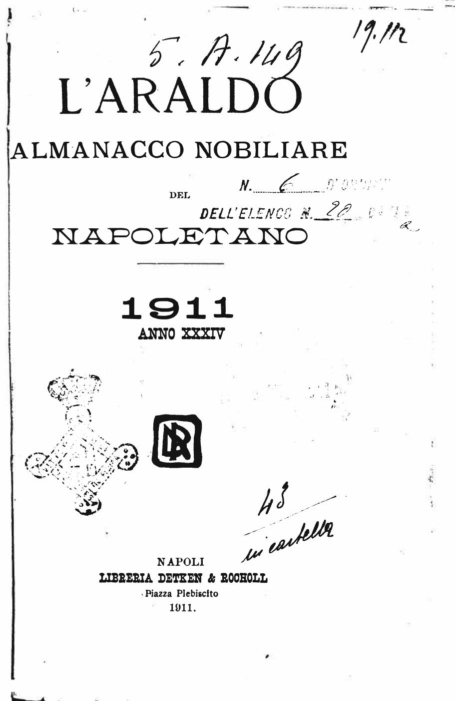
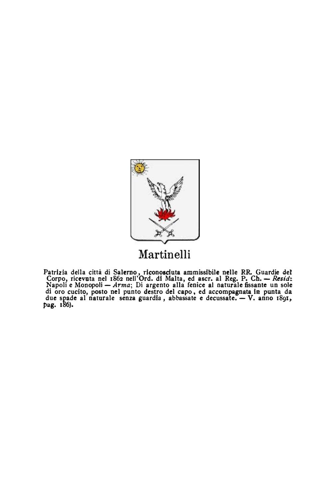
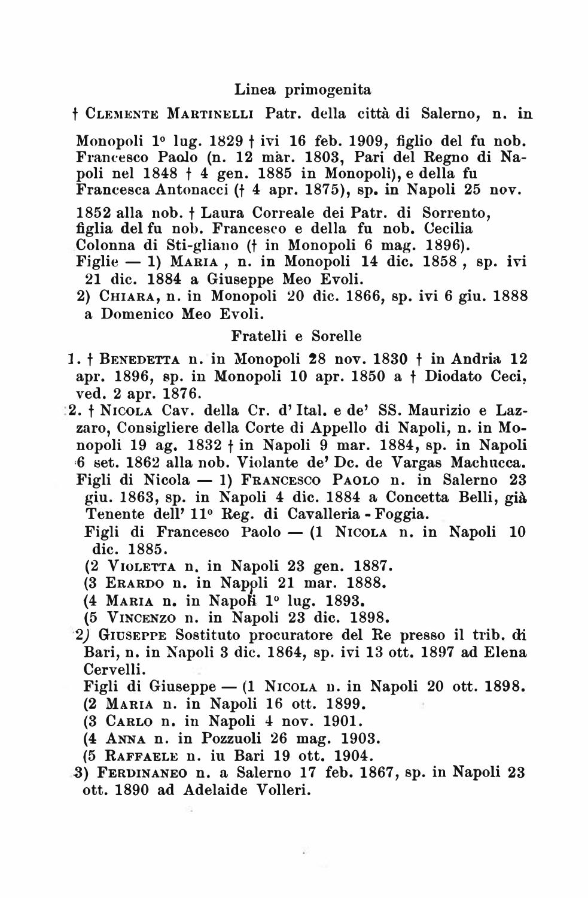
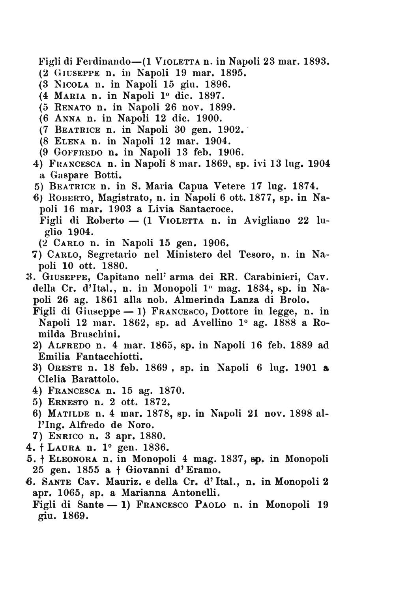
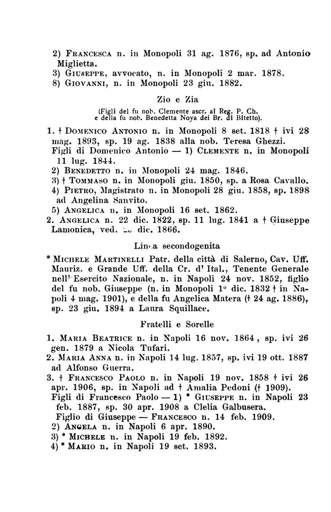
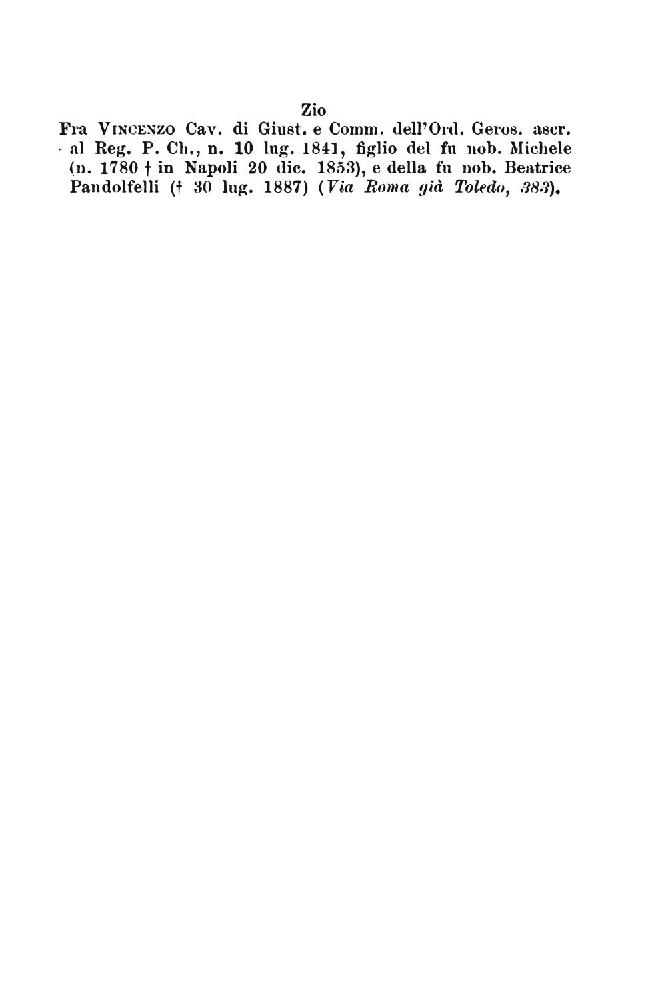

Il documento è conservato nella scansione originale. Tocca una pagina per aprirla a piena risoluzione e ingrandirla.






DOCUMENTI DELL’ARCHIVIO
Almanacco nobiliare del Napoletano — estratto della famiglia Martinelli.
← Torna ai Documenti · Apri il PDF completo · Scarica il PDF
Il documento è conservato nella scansione originale. Tocca una pagina per aprirla a piena risoluzione e ingrandirla.





